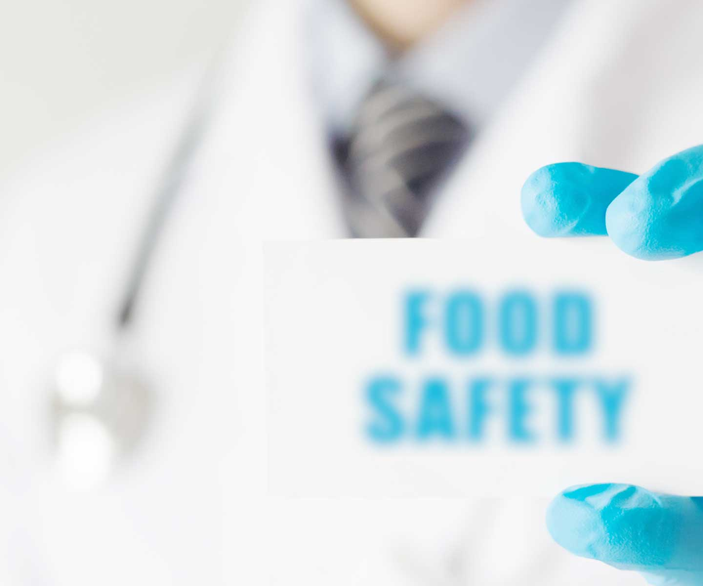
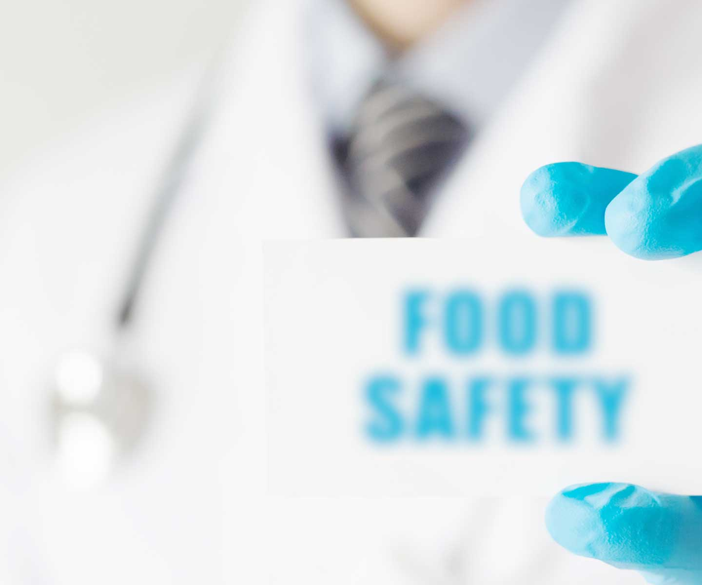
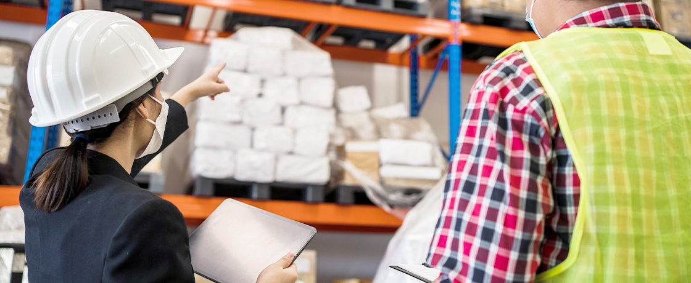

안전관리
위생 관리와 위해 사고 예방을 통해 롯데 식품 및 상품의 안전을 책임집니다.
-
위생점검
소비자가 직접 소비하는 모든 부분의 안전성을 확보하기 위해 식품 제조사 및 파트너사 공장, 유통사 매장에 위생 종합 점검(Audit)을 실시합니다. HACCP 및 ISO/FSSC 22000 등의 식품안전 시스템을 점검하고 사전 위해 관리 및 사후 재발방지 활동을 통해 원료의 취급부터 제품 생산, 유통 등 전 단계에 걸쳐 식품 안전성을 확보하고 있습니다. 전통적인 현장 점검에서부터, 어플리케이션 기반 온라인 점검을 가능케 한 "하이지니"와 기록 자동화 관리 시스템 "스마트모니터링 시스템" 개발을 통해 데이터를 기반으로 더욱 철저한 점검을 이뤄가고 있습니다.
-

품질점검
백화점, 마트, 슈퍼, 롯데ON 등 롯데 유통망에서 판매되는 비식품 상품에 대한 안전 및 품질을 관리합니다. 개발부터 출시에 이르기까지 품질 검사와 관리 업무를 진행하고 있으며 상품 안전성 확보, 고객 컴플레인 저감을 위한 선도적 역할을 수행하고 있습니다. RPA 기술을 도입해 위해상품차단시스템을 운영하는 등 롯데그룹 유통사의 상품 안전관리 분야를 책임지고 있습니다.
-
위해분석
부적합 유통상품의 사전 차단과 예방을 위해 물리적, 화학적, 생물학적 위해요소를 분석 및 관리합니다. 제품 제조·생산 과정에서 다양한 경로로 혼입·발생하는 유해물질을 분석하고 미규제 물질에 대한 분석법을 사전에 확립하여 이슈를 선제 대응하고 있습니다. 또한 식품 위생지표균과 식중독균 등의 미생물 검사를 통해 부적합 상품을 차단/조치하고 현장 위생 검사 및 개선을 진행하고 있습니다.
-
기준관리
안전 관리 기준 및 시스템을 수립하고 컨설팅을 지원하여 그룹 차원의 식품 안전 관리 역량을 강화합니다. HACCP 인증, 친환경 인증 등 정부 인증 관련 업무를 지원하고 통합 우수 위생관리 기준(L-GHP, LOTTE Good Hygiene Practice)을 수립해 식품 위생 및 안전 관리에 기여하고 있습니다. 또한 식품 유형별 취약점 및 계절 특이성을 반영한 위생관리를 실시하고 해당 인사이트를 바탕으로 파트너사 대상 식품 안전관리 컨설팅을 지원하고 있습니다.
-
안전교육
그룹 식품사 및 유통사를 비롯해 국내 식품업 종사자의 식품 안전 역량 향상을 위한 내·외부 교육을 기획하고 진행합니다. 그룹 식품 종사자를 대상으로 식품안전아카데미 교육 커리큘럼을 운영해 1000명 이상의 교육생을 배출했으며, 메타버스 교육 공간 롯데메타에듀빌과 VR 콘텐츠를 활용하여 스마트한 식품 안전 문화를 구축해가고 있습니다. 또한 식품사 역량 강화 및 ESG의 일환으로, 국내 식품 제조업 종사자 대상 무료 교육을 실시해 위생 관리의 중요성을 인식시키고 시장 전반에 기여하고 있습니다.